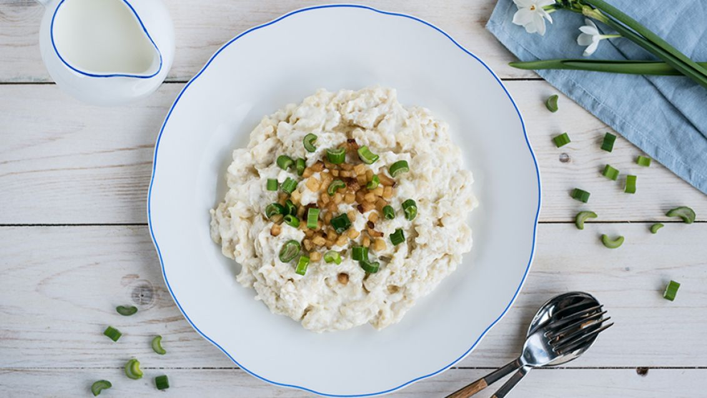

Bryndzove Halusky

Description
Bryndzové halušky is the name of Slovakia's national dish.
It is a true comfort food. It is little dumplings made with from grated potato, flour and egg.
The little dumplings are boiled and then smothered in a special sheep's cheese and topped with bacon bits
and drippings.
Seriously what is not to love, potato, cheese and bacon!
Ingredients
- 125 gr flour
- 1 egg
- 1 potato
- 80 ml water
- 1/2 tablespoon salt
- 150 gr bryndza (traditional slovak sheep cheese)
- 5 to 7 slices of thick bacon
- salt to taste
Steps
- Finely grate the potato into a bowl, keeping the juice.
Add flour, egg, and salt, and stir with a wooden spoon.
Add water and stir until all the lumps are smoothed out. If the dough is too runny, add flour; if too thick, add water.
- In a large pot, bring water to a boil and add salt.
Transfer the potato dough into the boiling water by using a spaetzle maker, or push the dough through a large grater or colander.
Gently boil all halušky for 7 or 8 minutes, until they all float to the top.
- Meanwhile, cut the bacon into cubes and fry untill crisp
- Strain the halušky and mix with bryndza. Sprinkle the bacon on top and pour the rendered bacon fat all over. Salt to taste and serve immediately.